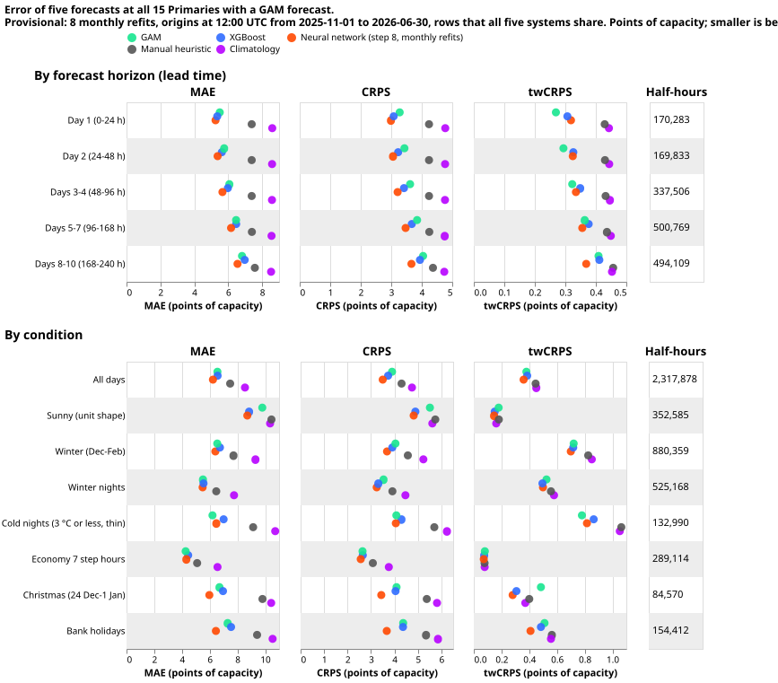
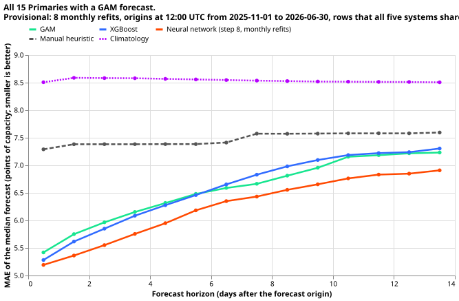
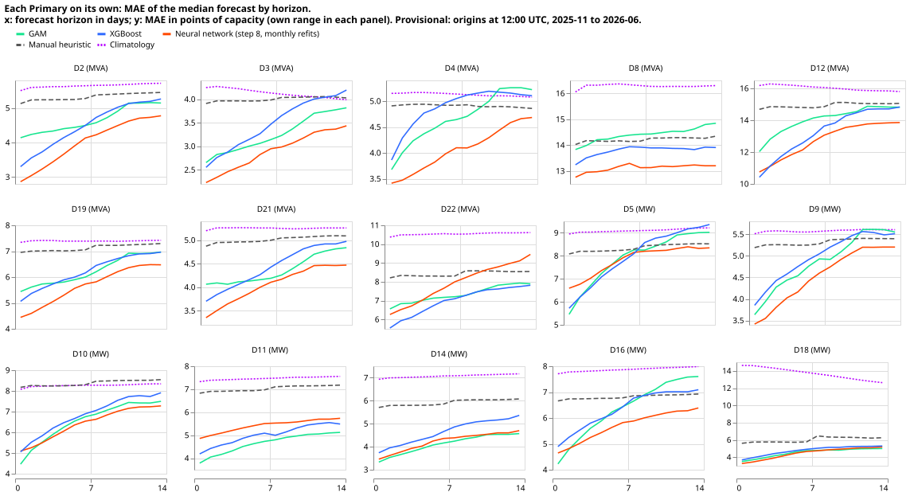
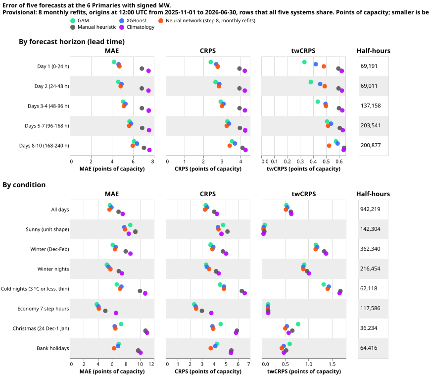
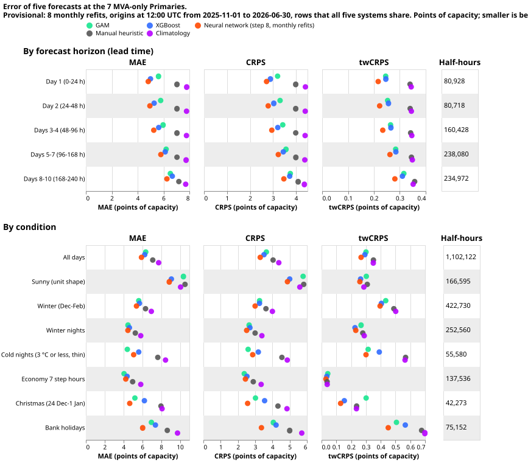

How long do a generalised additive model (GAM) and an XGBoost model take to forecast daily origins 14 days ahead with monthly refits, and how do their forecasts score against the neural networks of experiment 677 over the origin months 2025-11 to 2026-06?
The GAM takes about 15 minutes per origin month and the XGBoost blend about 23 minutes. Over 8 origin months, both score below the manual heuristic and about 0.3 points of capacity behind step 8 with monthly refits. An origin month is a month of daily forecast origins, and a forecast origin is the time at which a forecast is issued (here 12:00 UTC each day, with each forecast covering the next 14 days).
We asked how long two forecasting systems take to produce such forecasts with monthly refits (retraining each system once a month), and how accurate they are. The two systems predate the neural networks of experiment 677. The GAM is a generalised additive model of demand against weather (Primary demand research default 3 of experiment 378). BG2 is a blend of five XGBoost models (gradient-boosted decision trees) from experiment 87. Both forecast the demand at Primary substations.
We timed each stage for January 2026 and scored 8 origin months, 2025-11 to 2026-06. The 8 months of GAM forecasts come from re-running the GAM. The 8 months of XGBoost forecasts are the stored forecasts of experiment 87, with the origin relabelled to 12:00 UTC. The score is the normalised MAE of the median forecast, in points of capacity (percentage points of a Primary's capacity). BG2 covers 16 Primaries, and the GAM covers 15, because the Primary with identifier D15 is not in the GAM file. Every table pools the 15 Primaries that all systems cover, which include D8 and D18, the two Primaries outside experiment 677's groups. The GAM's pooled MAE is 6.56 with them and 6.07 without them, so the pooled figures do not compare with the 13-Primary group figures.
All numbers are provisional, because 4 of the 12 origin months of the backtest year of experiment 677 are missing. The inputs of those 4 months do not exist yet (see "Blockers for the full year").
A year of each system is projected to take hours. One origin month of the GAM took 887 seconds of single-thread time, summed over 15 Primaries and the solar-summary replay, which projects to 3.0 hours for 12 months. One origin month of the XGBoost blend took 1,355 seconds of GPU time for its monthly refits and assembly, which projects to 4.5 hours for 12 months. Refitting the blend's weekly member weekly is projected to take about 50 minutes per month and 10.1 hours for 12 months, on the assumption that a weekly refit takes as long as the monthly refit of the same member. Only January was timed, so the projections are straight multiples of that month. The replay time per origin month divides the replay by 15 fold months, which averages early, light months with later, heavier ones, so a single new month in production probably takes longer than 516 seconds.
Scores over 8 origin months
Step 8 with monthly refits scores below the GAM and the XGBoost blend on each of the 14 forecast days, and both score below the manual heuristic on each of those days. The table gives the normalised MAE of the median forecast and the continuous ranked probability score (CRPS) in points of capacity, over every half-hour that all nine arms share, at the 15 Primaries. The XGBoost blend and the GAM score the same MAE overall (6.57 and 6.56). "Day 1" is the lead slice of 0 to 24 hours after the origin (open at 0, closed at 24), and "days 8 to 10" is 168 to 240 hours.
| Arm | MAE, day 1 | MAE, days 8 to 10 | MAE, all half-hours | CRPS, all half-hours |
|---|---|---|---|---|
| GAM | 5.50 | 6.81 | 6.56 | 3.90 |
| XGBoost blend BG2 (weekly member) | 5.36 | 6.97 | 6.57 | 3.73 |
| XGBoost with monthly refits only | 5.45 | 7.01 | 6.62 | 3.76 |
| Step 5 (quarterly refits) | 5.35 | 6.55 | 6.26 | 3.52 |
| Step 8 (quarterly refits) | 5.45 | 6.59 | 6.31 | 3.55 |
| Step 5 monthly (step 9a) | 5.17 | 6.52 | 6.19 | 3.47 |
| Step 8 monthly (step 9b) | 5.25 | 6.55 | 6.23 | 3.50 |
| Manual heuristic | 7.38 | 7.57 | 7.48 | 4.30 |
| Climatology | 8.60 | 8.53 | 8.54 | 4.74 |
The GAM scores within 0.1 points of step 8 with monthly refits at the 6 Primaries that report signed megawatts, and 0.4 to 0.5 points behind the neural networks at the 7 Primaries that report apparent power only. At the 6 signed-MW Primaries (D5, D9, D10, D11, D14, and D16), the GAM scores 5.73 against 5.67 for step 8 monthly and 5.85 for step 8 quarterly. At the 7 MVA-only Primaries (D2, D3, D4, D12, D19, D21, and D22), the GAM scores 6.36 against 5.91 for step 8 monthly. D8, D15, and D18 belong to neither group.
On day 1 at the 6 signed-MW Primaries, and on cold nights at the signed-MW and MVA-only groups, the GAM scores below every neural network. At the signed-MW Primaries on day 1, it scores 4.21 against 4.63 to 5.01 for the four neural-network arms. On cold nights at the signed-MW Primaries, it scores 6.71 against 7.04 to 7.35, and at the MVA-only Primaries 4.41 against 4.94 to 5.31. (Cold nights are the slice that experiment 677 defines.) At the MVA-only Primaries on day 1, the GAM scores 5.61, behind all four neural-network arms (4.75 to 4.93).

The error of the GAM, BG2, step 8 monthly, and the manual heuristic rises with the forecast day, and the error of climatology stays near 8.5. Pooled over the 15 Primaries, the MAE of the GAM rises from 5.42 on day 0 to 7.23 on day 13, and the MAE of step 8 with monthly refits rises from 5.19 to 6.91. (Day 0 of this curve is the lead range 0 up to but not including 24 hours, so its values differ slightly from the "Day 1" column above.) The manual heuristic scores 7.29 on day 0 and 7.59 on day 13, so the GAM's lead over the manual heuristic narrows from 1.9 points to 0.4.


The 90% bands of the GAM and the XGBoost blend are closer to nominal than the bands of the neural networks. The share of readings inside the q05 to q95 band (nominal 0.90) is 0.874 for the GAM, 0.882 for BG2, and 0.887 for the monthly-only XGBoost model, against 0.818 to 0.834 for steps 5 and 8. The share inside the q01 to q99 band (nominal 0.98) is 0.958, 0.972, and 0.978, against 0.940 to 0.950. Coverage is measured on 2,044,341 half-hours per arm, which is the 13 Primaries of the two groups, and so on fewer half-hours than the 2,317,878 of the table above.


Timing of one origin month
The GAM has four quick stages and one slow stage. The table gives the January 2026 wall time in seconds, as the mean over the 15 Primaries except in the last row.
| GAM stage | Wall seconds | Notes |
|---|---|---|
| Monthly refit | 0.31 per Primary | Maximum 0.36 s. |
| Stage 1 setup and forecast | 6.5 per Primary | The forecast alone takes 0.37 s. |
| Stage 2 | 3.8 per Primary | Maximum 18.1 s, at D8. |
| Member solar responses | 14.0 per Primary | |
| Solar summary and blend replay | 516 per origin month, for all 15 Primaries | 4 single-thread jobs of 1,335, 2,413, 1,442, and 2,557 s (7,747 s in total) that each replay 15 fold months. |
A rerun of the GAM on the stored January inputs reproduces the stored forecast exactly (largest difference 0.0). Run for 8 origin months at once, stage 1 took 16.5 seconds per Primary and stage 2 took 20.5 seconds, on at most 2.0 GB of memory. That is far less than 8 times the January time, so the 3.0 hours for 12 months is a conservative estimate.
The XGBoost blend needs 5 monthly refits per month, and its weekly member needs more. The monthly refits are those of the monthly member M, the analogue member AN, the pooled member PT, and two offset twins (copies of M and AN that carry a solar offset). Each refit job covers 20 series, as experiment 87's fit script defines them. The jobs took 388, 329, 195, 153, and 156 seconds (1,220 seconds in total), and assembling BG2 took 135 seconds on 4.4 GB of memory. The frozen member ST is not refitted. The weekly member W refits about 4.3 times per month, so refitting it weekly is the slowest part of the design.
The refit differs from the stored forecast by up to 0.018 of capacity at the median for BG2 and 0.037 for the monthly-only variant, with a mean difference of 0.0002 and 0.0004. The cause is probably non-deterministic GPU summation, but the experiment did not test that.
Changes needed for 14-day forecasts from 12:00 UTC origins
- One code change: the GAM's forecast window in experiment 377 held 672 half-hours (336 hours),
which is 3 hours short of a 12:00 UTC origin plus 14 days when the native origin is 09:00 UTC. The
module
e00700_horizon.pysets the window to 678 half-hours before experiment 377's modules load. Forecasts at leads of 240 hours or less are unchanged. The last lead band of stage 2 (240 to 336 hours) is refitted with the extra 3 hours, so its q95 differs from the stored rows by up to 0.78 points of capacity, only on days 10 to 14. - A relabel of the origin: the GAM and the XGBoost blend forecast from 00:00 UTC ensemble runs, published 9 hours later, so their native origin is 09:00 UTC. The files relabel the origin to 12:00 UTC, as experiment 667 does, and keep valid times from 12:00 UTC for 14 days.
- No new weather: the stored ensemble arrays hold 351 hours of forecast, so 14 days needed no download.
Blockers for the full year
- The inputs end between 2026-06-30 and 2026-09-11. The GAM's feature cache and ensemble arrays end on 2026-06-30, the XGBoost frames end on the same date, and the observed-power rows of experiment 103 end on 2026-07-01. The ERA5 file (a reanalysis, which is an estimate of past weather) ends on 2026-07-31, and the CAMS file (a reanalysis of atmospheric composition and solar radiation) ends on 2026-09-11. The origin months 2026-07 to 2026-10 therefore need rebuilt inputs, including an ERA5 extension that is a download. The archive of the ensemble from the European Centre for Medium-Range Weather Forecasts on the workstation reaches 2026-11-16, so the ensemble needs no download.
- D15 is not in the GAM file, and D18 enters from 2026-01, with 180 origins against 241 at each of the other 14 Primaries, because a Primary's rows start at the first month of its stored stage 2 file. The GAM file has no origin on 2026-06-30, because stage 1 skips runs near the end of the data, and holds 3,554 Primary-origin pairs.
- The GAM file has fewer than 672 half-hours at 593 of those 3,554 pairs, in the origin months 2026-03 (216), 2026-04 (72), 2026-05 (83), and 2026-06 (222), where the stored ensemble arrays lack some half-hours. The scorer uses only the half-hours that every arm has.
Rebuilding lag inputs from shifted power
Both the GAM and the XGBoost blend can rebuild their lag inputs from a shifted copy of the observed power in minutes per month, but this experiment did not score a shifted-lag bank. This section is an assessment from the code.
- XGBoost blend: BG2 has three lag inputs (the newest reading, the reading at the same time
yesterday, and the reading at the same time last week), and the analogue member also uses weekly
means and medians.
origin_lagsandadd_lagsbuild the lag inputs from one dense array of observed power over capacity, so a shifted copy passed toprepared_runreplaces them. A refit is needed for the month, because experiment 87's fit script saves no boosters. - GAM: the GAM has no lag columns. A shift enters through the observed series of the stage 1
residual stream and filter, and through the
actualcolumn of the stage 2 recipe R. Rerunning stage 1 and stage 2 takes about 10 seconds per Primary, and the fitted coefficients do not change.
Checks
- Median error beside the quantile scores: the table above gives both. For BG2 against the GAM, the two scores differ: BG2 and the GAM have the same MAE (6.57 and 6.56), and BG2 has the lower CRPS (3.73 against 3.90).
- Audit triggers: trigger 1 (a failed control) fired in a weak form, because the refit of the XGBoost blend does not reproduce the stored forecast exactly. The mean difference of 0.0002 to 0.0004 of capacity is small beside the gaps of 0.3 points and more between arms. Trigger 3 fired for BG2 against the GAM, as the first bullet shows. No audit has run, and no contrast is claimed.
Method
Architecture:
- GAM: Primary demand research default 3 of experiment 378: a monthly penalised bounded least-squares refit per Primary on a 24-month window (experiment 377), a stage 1 forecast from the 51 ensemble members with a correction filter and a spread table, the stage 2 correction of experiment 155's arm d, and the solar summary and daylight blend of experiment 378. Up to 168 hours the forecast uses the solar summary, from 168 to 240 hours it uses the solar summary and blend, and beyond 240 hours it uses stage 2 alone. The hour counts run from the native 09:00 UTC origin.
- XGBoost blend: BG2 of experiment 87, a 5-member quantile blend of a weekly refit (W), a
monthly refit (M), an analogue model (AN), a pooled model (PT), and a frozen model (ST), with a
spread factor of 1.15, monthly causal blend weights, and a solar offset at 5 Primaries. The
monthly-only variant is experiment 87's arm
p_a3_monthly_in_weekly_slot, which puts M in W's place. - No information after the forecast origin: the GAM and the XGBoost blend use the 00:00 UTC ensemble run published at 09:00 UTC.
Training regime:
- GAM: one fit per Primary per month on the 24 months before the cut. The solar summary and blend files are experiment 378's stored files.
- XGBoost blend: the January refits used experiment 87's
e00087_fit_demand.pywith 6 workers. The 8-month scores use the stored arms of experiment 87, relabelled to the 12:00 UTC origin, and not a rerun.
Measurement:
- Rows: origins at 12:00 UTC from 2025-11-01 to 2026-06-30 and valid times up to 14 days ahead, scored on the half-hours that all arms share, with the cleaned power and the Primary cleaning rules of experiment 677.
- Metrics: the normalised MAE of the median, CRPS, and twCRPS from
studies.eval_protocol.metrics, q05 to q95 and q01 to q99 coverage, and the MAE by forecast day (day 0 is the lead range 0 up to but not including 24 hours after the 12:00 UTC origin). - References: the manual heuristic and climatology are the stored arms
ref_manual_heuristicandref_climatologyof experiment 87, relabelled from 09:00 to 12:00 UTC. Steps 5 and 8 come from experiment 677's files for the same origins, seeds 0 to 2. - Seeds and references: steps 5 and 8 are averages of the quantiles of 3 seeds, while the GAM and the XGBoost arms have one seed each, so the neural networks' lead is slightly flattered. The stored manual heuristic of experiment 87 limits its lags by the native lead, which is 3 hours more conservative than the heuristic of experiment 677, so the heuristic and climatology scores do not compare with experiment 677's own numbers.
- No intervals: the experiment makes no contrast claim, so it computes none.
- Groups: the 6 signed-MW and the 7 MVA-only Primaries are experiment 677's groups. The pooled figures cover 15 Primaries.
Files
e00700_horizon.pylengthens the GAM window from 672 to 678 half-hours.e00700_gam_refit.py,e00700_gam_stage1.py,e00700_gam_stage2.py, ande00700_gam_members.pytime the January refit, stage 1, stage 2, and member responses.e00700_gam_year.shruns stage 1 and stage 2 for the 8 origin months.e00700_xgb_run.shande00700_xgb_chain.shtime the January refits of experiment 87's members.e00700_export.pyassembles the GAM's default 3 and the XGBoost arms in the file layout of experiment 677.e00700_ladder_year.pycuts experiment 677's steps 5 and 8 to the same origins.e00700_protocol.pyande00700_extra.pyscore every arm.e00700_report.pyprints every number on this page, ande00700_plots.pydraws the figures.- Data (private, under
data/ml-experiments/00700-timing-run-gam-and-xgboost-14-day-monthly-refit/):sandbox/(copies of the data of experiments 377, 378, and 87'sanchor_preds, and symlinks to the rest),timing/,backtests/(the forecast files),scores/(protocol_year/rows.parquetandscores.csv),plots/, andreport.txt. - Earlier experiments read: experiment 87, experiment 377, experiment 378, experiment 667, experiment 668, and experiment 677.